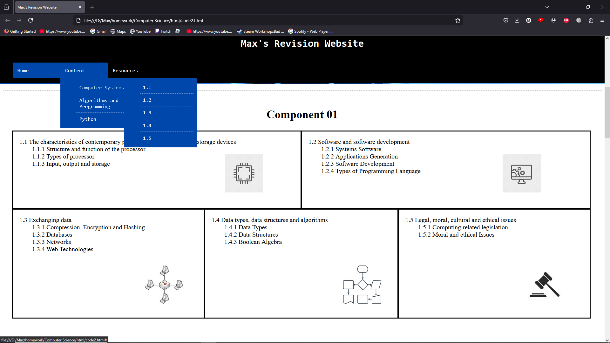

GCSE Revision Website
_______________________________________________________
The first project I worked on was a HTML web project, designed to teach GCSE students important content from their course. I decided to create this as I was a GCSE Computer Science student at the time, and I used as as both a way to exercise my programming abilities and as a method of revision.
Here, you can see the landing page for the website, providing a brief description of the site and a nav bar at the top so the user can easily navigate the website. This was designed using CSS. The design of this website was inspired by this, as I thought it was a fun way of demonstrating how far I have come.


This image shows some of the content of the website, including what I thought were the key areas to focus on when revising.